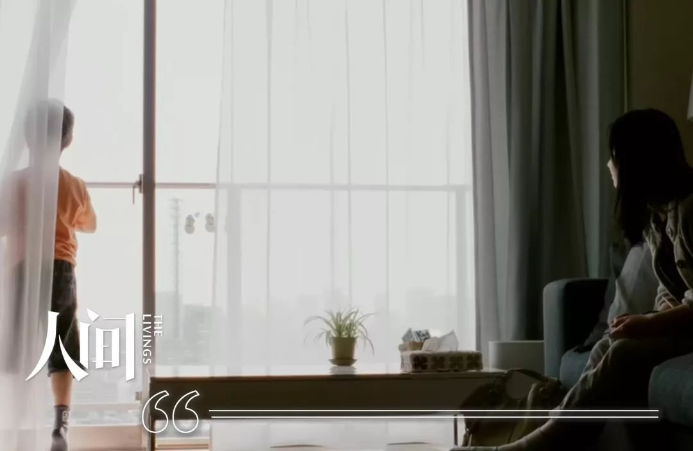

他从武汉回家乡，被当成了“瘟神” | 武汉每日书 10
原文链接 备份链接 本文作者是一名报社的实习记者，得知肺炎疫情严重之时，她决定回到家乡武汉，跟家人在一起。她日夜感受病毒是如何改变着、影响着武汉人的生活，并决定记录下周围发生的故事。在今天这篇“武汉日常”每日书中，她采访了一位朋友，他的处 …


我把儿子抱到窗户边，他在那边吼：“别出来，着凉！”我妈一把抱过孩子，高高举起，他在那头喃喃说道：“看见了，看见了。”

配图 |《如父如子》剧照
前 言

这是一场战争，在新年的伊始，爆发在每一个普通的、平凡的中国人身边。
这是我们的战争，我们热切地讨论、谨慎地分析，为灾难中陨落的生命而痛惜，为医者大无畏的精神所感动，为我们能为之所做的点滴小事而不懈努力。
人生海海，我们且行且惜。
网易人间「我们的战争」特辑，讲述每一天，我们与疫情赤膊相见。
我们的战争丨连载14
1月29日早上，老公从房间里出来，径直往阳台走去。看他沉默地收着衣服，我隐约觉得有些不对劲，就跟了过去。他拉上玻璃门，告诉我：“要常驻武汉肺科医院做报道了。”
“什么时候去？”
“马上。”
“去多久？”
“不知道。”
几分钟后，他出来跟我说：“今晚起不回家住了。”我坚决不同意，“像前两天那样采访完回来仔细消毒不就好了？”
他有些恼，让我不要任性，“孩子才6个月，如果带着病毒传染了孩子怎么办？”
我不再说话，只能看着他进出房间收衣物、装电脑。收拾完，他回到我和儿子面前，似乎有些无所适从，竟然双手合十，对着我怀里的儿子作了个揖，又过来攥了攥儿子的肩。
他躲开我的眼神，提着东西走到妈身边说：“妈，要辛苦您了。”
妈爽朗地笑道：“安心去采访，家里有我，不用担心。”
他还是没回头看我，径直走了。

在老公接到常驻医院通知的前一天，我还把一段从家门猫眼拍的视频发给朋友。视频里，老公拿着玻璃清洗剂的壶，一点一点的喷洒酒精，从头发到鞋底。
这瓶酒精来之不易。之前出门采访，每到一处药店或医院，老公都会询问是否有酒精卖，均未觅得。当天他又在一家药店问，店里的人本说没有，但后来听说我们家有小婴儿，才从柜台里拿出了一瓶。老公很开心，告诉朋友们自己遇到了好心人，还给酒精拍了张照片发到群里。
临近回家前，他在微信上嘱咐我烧一壶水，再拿一个大塑料袋和浇花的水壶，放在家门外。人到了门口，又发微信问我：“东西呢？”我匆忙拿出去，他就让我把东西放地上，立马关上门。
不一会儿，我听到他的呼唤：“水壶是漏的，得重新找个喷壶。”我翻箱倒柜，找出一瓶“威猛先生”，可怎么也拔不下壶盖，又想清洗出一个洗发液的瓶子，可洗了好一会儿，也冲洗不净泡沫。最后，我发现一瓶玻璃清洗剂，赶紧倒光瓶子里的液体，冲洗几遍，然后奔出房门，递给老公。
关上房门走进客厅，我才注意到儿子正定定地看着我。他正在妈的怀里吃米粉，平日里都是抢碗抢勺子吃得满嘴满脸都是，此刻，他却一口一口认真张着嘴，咽下去。
儿子已经很久没有出过门了。
1月22日那天，我们家有过激烈的讨论，老公和妈都认为应该把孩子送回老家。我不想一家人分开，也不想硬生生地提前给孩子断奶，就说：“要留都一起留下吧”。
此后的每一天，我无数次的为自己的这个决定懊悔——怎么能把儿子置于这样的险境中呢？直到后来看到各地民众对武汉人的恐慌，我才逐渐释然。
1月23日凌晨，已有朋友开始传“要封城”的消息。早上6点醒来，我们看到正式公告，不到7点，我和老公就戴着口罩、帽子出门了——如果我的记忆没有没错，这是我认识我老公14年来，他第一次带帽子——出门前，我把一个大大的宽边太阳帽递给他，他没有丝毫犹豫，扣到了头上。
我们驱车前往家附近的一家24小时便利店，发现便利店对面的小菜场竟也开着。我俩当即决定兵分两路，他去菜场，我去便利店。便利店所剩东西不多，店员说，凌晨3点出了公告后，就陆续有人来大量采购了。
我买了些泡面和水，就去了对面的小菜场。
菜场里面很热闹，帮忙称菜的阿姨大声与人谈天，说他们春节不放假，“不用囤太多”。角落里，一个与她年龄相仿的阿姨带着哭腔打电话，说没办法，汽车火车都要停，“出不去了”。
最后，我们买了米、油、蔬菜，提着重重的几个大袋子回了家。
几天后，这些东西还没怎么消耗，市政府就发布了私家车禁行的公告。当时，老公正在外采访，我不想打扰他，看完公告，我裹上大袄子，穿戴好帽子、口罩，匆匆去了家门口的超市。
超市里除了我，没有一个顾客。我快速挑选酸奶、饼干、蔬菜、面粉、鸡蛋。因为从不做饭，我也不知道什么蔬菜适宜囤积，只好囫囵吞枣都抓了些。
就在我快挑好东西时，超市里突然一下子涌入了十几个人。大家都沉默着，自顾自地拿东西。现场太安静了，我竟然有些想落泪。
结账时，人已经多到开始有些拥挤了。收银员不满地大喊：“都快下班关门了，怎么都跑来了？！”
我没有回答，提着不能言说的沉重，快速转身回家。

在老公进入肺科医院的第一天，我无数次想拿起手机给他打电话，又一次次作罢。
中午，他打来电话问我们都好吗。我问他还好吗，他让我们不要担心他，我也让他不要担心我们。
说完，我俩半晌没说话。
眼看已经过了晚上7点，我很想问问他的情况，但始终忍着没拿起手机。快9点时，我接到了他的电话，他说，忙完了，要回家拿充电器和换洗衣服。
我赶忙开始收拾，发现他爱穿的几件衣服都被妈洗了，我一一取下来铺在暖气片上。妈把家里寄来的几种牛肉干都给他装上，又把家里的零食搜罗了一遍。
还能给他带些什么呢？我突然想到了海桑的诗集《不如让每天发生些小事情》。
这本诗集是我送给他的。
记得儿子刚出生不久的时候，我们俩都在正适应着全新的生活——睡眠不足，也没有了自己的空间。因为这本诗集记录了很多诗人两岁女儿的小事情，很美好，我就在扉页写了几句话给老公，希望我们的生活也能因为儿子的到来而更美好。
诗集刚送给他的时候，他就一直放在枕头下，说要认真读读，可过了好长时间都没有翻开。我生气，把书抢了回来，放在了书房的书架上。而现在，我又把诗集放在了行李箱的最下层，不知道老公什么时候会看到——他这样的大迷糊，也许到回家时也不会看到吧。随他。
还没收拾完，他发微信说自己已经在家门口了。我把东西一股脑都塞进行李箱，拖向门边，准备把箱子递给他。他不肯接，让我把箱子放在地上，随后他提起来，又退后了一步。我俩隔着快1米的距离的时候，他才开口跟我说话。
老公戴着口罩，我看不到他的表情，不过，我俩也从来没这样轻声细语地说过话。“拥抱一下嘛。”我提议，他不干，转身就走。然后，我就听到他下楼的声音越来越远了。
晚上11点，我给他电话，才知道他还在找酒店。如今还在开门营业的酒店很少，即使开门，也多是为外地医疗队而开。
我到处问朋友，他也不停地咨询酒店的网络预订平台，均未果。后来，他一路开车，跨区走到我们曾经租住的房子附近，才看到一家半营业状态的酒店，好歹住下了。
睡前，我走进卧室，才发现他的一件卫衣还摊在卧室的暖气片上，忘了给他装上。
气得想揍自己，我真是个蠢猪！

后来的几天，老公总共回来了两次。
一次是回家送大米，那天晚上，他突然发来信息说人在家门口了。我慌忙开门，发现两袋大米放在门边，包装袋表面已经被他消完了毒。
后来我才察觉，自从老公离开家以后，就再也没碰过家里的门和门把手。
另一次是回来送朋友给的药和口罩。我们同小区的好朋回安徽老家后，被当地社区要求居家隔离14天。有人给他寄了一些抗病毒药和N95口罩，送到后一直放在小区的快递柜里。朋友知道老公进驻医院，就叫我们把口罩和药拿去用。
老公回来取包裹的那天，在我开门之前，他已经照例把纸箱表面都做好了消毒。我再次提出拥抱的要求，又被他拒绝。我伸出右手，说要不就握个手。他犹豫了一下，伸出手，用手指碰了碰下我的指尖。
他立即吩咐我赶紧洗手，就走了。
“封城”后，真真假假的信息满天飞，我们几个好朋友在群里从未如此高频度地交流，时刻分享着关于这场疫情的焦虑。但我对老公常驻医院的担心，从未在群里吐露半句，他也从来没细致向我讲述他在医院的所闻所见。
唯一一次，他告诉我，他在医院门口见到一对老人缓缓从一辆电动车下来，步履蹒跚走进医院。他以为他们是来就诊的，就上前询问，才知道是老人的母亲去世了。
那天，他给我打来电话，也许是不知该如何自处——在每天报道医护人员的奋力救人之外，他们还有很多无法触及的现实。
那天结束工作后，他没有什么东西要送回家，我们也没有什么东西要带给他。他说，那就不回家了——“回家”，也不过是到家门前。
晚些时候，我抱着儿子，给他打去视频电话，看到他正在车里。我问他在哪儿，他支支吾吾的，说在外面。我问他是不是在家楼下，他“嘿嘿嘿”地笑了，然后一个劲儿地逗儿子。儿子不笑不闹，专注地看着屏幕里带着口罩的国字脸。过了好一会儿，老公才想起来，他摘掉口罩，问儿子，“还认识爸爸吗？”
儿子还是没有声响，他就哽咽了，说不出话。
我把儿子抱到窗户边，他在下面吼：“别出来，着凉！”我妈一把抱过孩子，高高举起，他在视频那头喃喃说道：“看见了，看见了。”

我的母亲，是地地道道、土生土长的藏族。我的整个青春期多数时候都在跟她较劲，这一次，我很庆幸，老公不在的时候，她还在我身边。
自从病毒的消息开始传播，我妈就开始马不停蹄地在家熏藏香，盯着我和老公喝藏药泡的水。我知道老公内心是抵触的，他问了我几次，“哺乳期能不能喝？”
有一天，我妈又让他喝药水时，他实在没忍住，问，“喝活佛舍利子做成的药不会有问题吗？”我妈愣了一下，然后捧腹大笑，告诉老公，这些药是糌粑做的！她迅速进房间，给我讲了这个“笑话”，又打电话讲给亲人听。
后来，我特意打电话向一个学识很渊博的舅舅请教。舅舅说，我们吃的那种藏药，是由几味药和着面粉做成的。他的结论是——总的来说，我老公的认知很离谱，我妈的说法也不靠谱。
此后，我妈仍雷打不动地让我和老公喝药水，我们如常扭扭捏捏地抗拒，但依旧执行。
“封城”的第二天中午，我的体温在37.3℃和37.6℃之间徘徊。我让老公看着孩子，迅速进了卧室，想“自我隔离”。没想到，我刚躺下，就听到老公向我妈“汇报”。然后就又听到我妈急匆匆的脚步声向我房间走来。
我立马锁了门。她很生气，闷声敲门。我没理，拒不开门，她又气又恼，跟儿子喊：“你妈又在作妖啦！”
过一会儿，敲门声停息了，一条微信发了来。长长一段话，说我“没有一点藏族气气”，要坚信菩萨会保佑我们，说我洗完澡不赶紧穿衣服，就是想把自己弄感冒。末了，她还配上3个流汗的表情，把我看得哭笑不得。
后来，体温渐渐回落，我出了房门，向她“负荆请罪”，说自己就是想观察一下。她哼了一声：“观察个屁。”
老公进驻医院后，我知道，我妈嘴上虽然没说什么，但心里并不踏实。她一遍遍地催问家里年前寄来的另一种藏药怎么还不到，又让我联系快递员、找快递点、打客服电话问。最后，是家里人通过寄出的快递点联系上武汉的快递点，说包裹里有老人急需用的药品，快递才派人送了来。
包裹一到，我妈就催促我让老公回来取。晚上，老公回来了，我妈交代他，药要几时几刻吃多少，老公没有丝毫犹疑，答应了。
我妈这下安心了，她说：“吃了这药保准没问题。”此后，她每天跟远近亲疏的不同亲友通话，因为这场疫情，远在川西高原的牧民亲戚们第一次知道了湖北、知道了武汉。他们密集地打来电话，我妈总是哈哈笑道：“我们在敌占区，你们在解放区。”
起初，我很恼，觉得她吵得人心慌。可一天天随着形势越来越严峻，我开始享受我妈的谈天声，这种吵闹让人安心。
每天中午或晚上，我和老公会通几次电话。我们心照不宣，从不谈及疫情。
2月2日下午，老公突然给我打来电话，听起来有些着急。他让我别再随意出门了，说隔壁楼下已经有人确诊了。
挂了电话，过一会儿，他就在微信群里问：“6栋2单元1楼下午刚拉走，怎么办？”那个送我们口罩的好朋友只回了一句：“哎。”
这一天，老公接连打了几个电话回来，让我注意在马桶喷洒消毒液、用酒精认真擦拭门把手。我俩商量了下，最终没有告诉我妈这件事，得让她始终相信“至少我们小区里是安全的”。
同时隐瞒我妈的，还有另一个消息。
前些天，朋友告诉我，她轻度感染病毒，正在接受治疗。我妈知道后很担心，总让我问对方情况是否好转。在这样人心惶惶的时候，我不愿打扰朋友，便没有多问。这天，朋友有事打来电话，我便问她身体如何，才知她当时肺都“白”了。她说她第一次知道什么叫“喘不上气”，甚至写了遗书给丈夫——好在，她现在幸运地转危为安，逐渐康复了。
似乎每一天都是这样，上午刚有一两个装点心情的好消息，下午就会来一个又一个不能与我妈分享的坏消息。我的精神世界从未遭遇如此的震动与打击，眼泪不知不觉流了一遍又一遍。但我不能说，不能告诉老公我的慌乱，不能向我妈倾诉我的崩溃，我只能用我的“如常”让他们放心。
有两天，我感觉喉咙里老有一股气，呼吸时有“呼呼”的声响。我很怕，怕自己也中招了，每隔1小时就偷偷测体温，还找了几个网络平台线上问询医生。后来，体温始终正常，医生判断是轻微的支气管炎，我才算安心。
老公也从未向我吐露他的焦虑，直到有一晚，我打开一个视频播放器，才窥见他情绪的冰山一角——我俩共用一个视频平台账号，本来我想在历史播放记录，找找之前没有看完的一部电视剧，然后，我看到了以下电影播放列表：《2012》，观看94%；《劫后余生》，观看57%；《地质灾害》，观看1%；《末日病毒》，96%。
4号的上午，老公突然回来了一趟，提了一大堆东西。我责怪他，家里还有那么多东西，干嘛又买？
他说，刚才网上有人发消息说超市会关门，很多超市都被抢购空了，怕过两天不好买东西了，连忙买了一批食物送回来。他照例把东西放在门边，自己站在1米外，让我提进去就放阳台，先用酒精消毒，两个小时后再动。
点藏香的打火机坏了，妈念叨了几天。趁着他回来，我赶忙问他要他身上带的火机。他试了下身上的火机，也不太好用了，转身就说去买。我连喊“不用、不着急”，他却已经下楼了。过一会儿，他买了5个火机回来，让我拿块布来接着，不要碰他手。
我看了下时间，已经快下午1点了，我问他吃饭怎么办？他让我不用担心，又转身离开了。
进了屋，我打开购物袋，想给里面的东西消消毒，才发现他竟然买了9瓶妈爱吃的桔子罐头、2罐妈爱吃的榨菜。在这人心惶惶、我们降低到只剩基本需求的时候，他竟然还记得这些。
傍晚，我问老公：今天还回来吗——他每一天的“套路”，都是会开车在家楼下的路上停留一会儿。
他笑道，“中午回过家，今天的份额用完了。”
以前没有儿子的时候，我常常一个人出门旅行，前几年辞职后的几次旅行，都是一走半个月。老公从来没有指责过我一句，只问我安不安全、吃得好不好。这些天，我无法了解他每天在外遭遇了什么，唯有每天问他吃得好不好、睡得好不好。
我没有像过去那样总是逗他，问他有没有想我。在分别的这些天，我们把对彼此的柔软都紧紧收拾了起来，回避情感，只简单交谈。
在朋友圈，我总看到有人问：疫情过后最想干的事是什么？我一直没有答案。昨天趁天气晴好，我站在窗前给儿子洗奶瓶，看着窗外，我突然在想，当下最大的心愿，是挽着老公的手，在阳光底下绕着小区走上一圈，就非常满足了。
夜里，我一个人睡觉时，把我们过往这十几年的很多事又想了一遍，又跑去他弃用很久的微博，给他私信了一句：“好想你啊。”

今天是老公离家的第11天。从走出家门的那一刻，他的“家”就变成了一扇门和门正对的过道。
我们在门里，他在门外，传递着这个家正常运行需要的各种物什：米、油、菜、药、口罩、鸡蛋……他戴着口罩，总是离我1米远，把自己当作潜在“病毒源”。为了“万无一失”，他一遍遍地嘱咐我用酒精喷洒门口，认真消毒门把手。
儿子在客厅里，爸爸在门外。他在这边喊，儿子在那边激动地晃动、摆手、咧嘴大笑。儿子才6个月，真的认识人了吗？
昨天，我妈提着儿子的胳肢窝，让儿子垫着脚，表演他几天前刚刚学会的“站立”。在5米开外的走廊上，他的爸爸终于见证了这一成长的重要时刻。他没有说话，只是热烈地鼓掌。
在回来之前，老公隔着窗户看到妈背着孩子在做饭，还问正在加班的我，“为什么不能帮帮妈？”那晚，他又在朋友圈里发了一张儿子啃玩具的照片，配的文字很不符合他的人设，“好想快点见到你，抱紧你。”
老公一年发不了一两次朋友圈，最多也就转转报社的稿子，从来不会说这么柔软的话。
其实写下这些文字的时候，我一直在犹豫——我不是医护人员，不在前线，我的文字配得上这段沉重的日子吗？
最后，我还是想记录下来，想用最无关情绪的文字，来记下这段特殊时期的生活。
昨晚，就在老公快要离开家时，我才意识到自己忘了戴眼镜。我让他等一等，赶忙戴上眼镜，认真地看了看他那张脸。
那张戴着口罩仍能让我读懂一切的脸，明天见。
编辑 | 许智博
尕 小 吾
只身打马过草原

本文系网易新闻人间工作室独家约稿，并享有独家版权。如需转载请在后台回复【转载】。
投稿给“人间-非虚构”写作平台，可致信：thelivings@vip.163.com，稿件一经刊用，将根据文章质量，提供千字500元-1000元的稿酬。
投稿文章需保证内容及全部内容信息（包括但不限于人物关系、事件经过、细节发展等所有元素）的真实性，保证作品不存在任何虚构内容。
其它合作、建议、故事线索，欢迎于微信后台（或邮件）联系我们。


点击以下「关键词」，查看往期内容：
群聊魔鬼 | 月嫂回忆录 |家暴 | 健身房的坑 | 生子丸
考公| 萌宠博主 | 82年的金智英 | 女大学生的毒虫男友
大牛失业 | 卧底狱警 | 娶妻改命 | 中年男人的窝囊死亡
职校老师 | 产科记事 | 改嫁 | 寻业中国 | 三大队 | 股市梦碎
扶弟魔 | 末路狂花 | 下乡扶贫| 外卖小哥 | 杀死我的女神
东北相亲 | 我放弃了科研 | 网红女同学 |与巨婴离婚的女人

原文链接 备份链接 本文作者是一名报社的实习记者，得知肺炎疫情严重之时，她决定回到家乡武汉，跟家人在一起。她日夜感受病毒是如何改变着、影响着武汉人的生活，并决定记录下周围发生的故事。在今天这篇“武汉日常”每日书中，她采访了一位朋友，他的处 …
原文链接 备份链接 作为风暴眼中的一位普通市民，我在自己意识里构建出的安全感，在生活的随机性前，就如潮水中的沙堡，一下就被分崩离析了。 配图 | B站UP主林晨同学自制视频 征 稿 从2019年12月8日首例武汉新型冠状病毒肺炎患者出现， …
原文链接 备份链接 我是河南信阳人，在武汉读书，毕业后留在武汉，现居洪山区，是一个1岁多的孩子的妈妈。武汉是疫情中心，老家信阳距离武汉很近，现在也是疫情重点排查城市。 1月20号，“封城”三天前，钟南山院士提到新冠肺炎存在人传人现象。这个 …
原文链接 备份链接 这几天都睡得特别晚，昨天凌晨两点多，突然在网上刷到武汉即将停掉市内所有公共交通，包括地铁，关闭机场和火车站等外出方式的时候，心里咯噔了一下，一来是这个措施说明疫情形势很严峻，二来是这辈子万万没想到会遇见一次“封城”。 …
原文链接 备份链接 三、暖心 整个广东医疗队大部分成员都是在2月9号凌晨到2点之间被确定参加援鄂医疗队，8点就要整装出发，所以不仅是个人的生活物资，医院准备的医疗物资都难以在这么短时间内备齐，这导致很多地市的医疗队都是带着点生活用品就匆匆 …